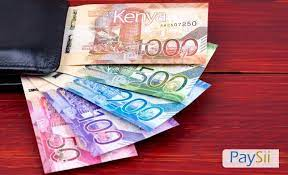
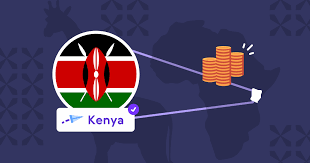
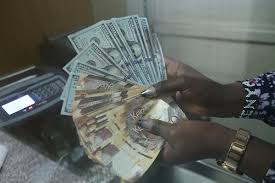
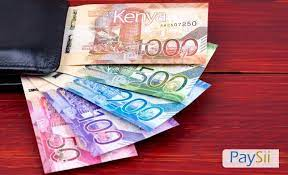
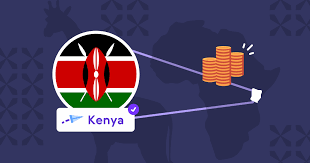
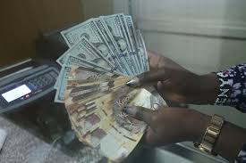
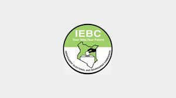

Project 1
My first project was a project where I was able to develop a website for a kenya start up company
which entails sending money from Abroad to Kenya. With This project I was able to make a major progress
in the field of development.
With the same Project I was able to make big progress and I also received another project which is project
2, which I have highlighted after this project.
Below is a sneak preview on my project 1.
.png) 





Project 2
After the first Project I secured another project which involved designing the website of car importation.
This was one of the best gig I secured and which opened very many other doors. I have received so many
clients after designing this project 2.
Attached are some of the screenshots of the second Project
.jpeg)
.jpeg)
.jpeg)
.jpeg)
Project 3
My project 3 was one project for the books which distinguished me as one of the Top
web developers in the country.
The project was mainly on designing an Taxi app for a company in Kenya which is known as Faras
.I had so much fun and exposure working on this project.
Attached are some of the screenshots of what the software looks like.
.png)
.jpeg)
.jpeg)
Project 4
My final and the most recent project which I have done is my project about buidling the electoral
website for Kenya Elections. This Project was incorporated by me and several other Friends who are my
colleagues.
The project was a big success towards fixing the bugs which are there in the electoral process at large.
Attached are some of the screenshots of the website which we were able to create.

.jpeg)
.jpeg)
.jpeg)